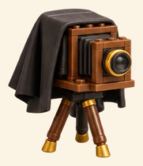
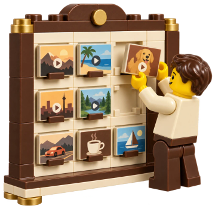

Модуль 1 «AI-монтаж»
урок 4 из 10
1.4
Сборка ролика

Результат урокаГотовый рилс 2K с графикой, субтитрами и звуком. К нему подпись для публикации.
1запись

2
расшифровка по словам
3карта монтажа

4лист кадров К001…
5
черновик 720p
6финал 2K
Карта монтажа это план, что на экране в каждую секунду: где графика, где переход, какой звук. Лист кадров это картинки ролика через каждые 2 секунды, у каждой свой номер. Черновик это ролик в низком качестве (720p), чтобы быстро посмотреть. Финал это ролик в высоком качестве (2K).
Что делаете вы
- 1Запишите видео на телефон или голос по тексту от Скриптолога. Голос нейросетью: на сайте ElevenLabs вставьте текст, выберите голос и скачайте MP3.
- 2Перекиньте запись с телефона на компьютер (Telegram «Избранное», кабель или AirDrop) и напишите Монтажёру фразу из чёрного блока. Агент сам положит файл в папку ролика.
- 3Посмотрите лист кадров.
- 4Правки пишите по номерам: «К006: вместо иконки настоящий скриншот».
- 5Посмотрите черновик 720p и напишите «ок».
Лист кадров
К001
К002
К003
К004
К005
К006
К006: вместо иконки настоящий скриншот
onAI Academy · Vibe Production · @saint4ai17 / 33